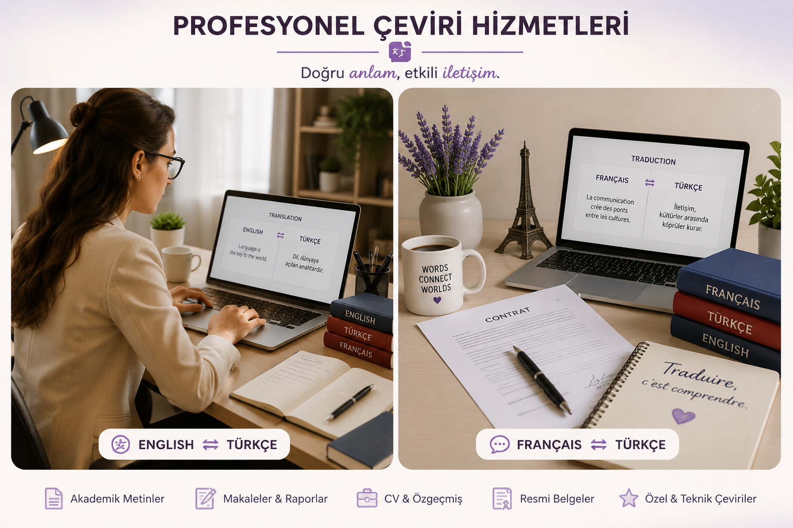

Esra K. Kadıoğlu
İngilizce • Fransızca • Türkçe Eğitmeni
Eğitim Koçu | Profesyonel Çevirmen
Eğitim Koçu | Profesyonel Çevirmen
Dil öğrenme, sınav hazırlığı ve profesyonel çeviri alanlarında kişiye özel eğitim ve danışmanlık hizmetleri sunuyorum.

Merhaba, ben Esra K. Kadıoğlu. İngilizce, Fransızca ve Türkçe alanlarında eğitim, sınav hazırlığı ve profesyonel çeviri hizmetleri sunuyorum. Öğrencilerime hedeflerine uygun çalışma planları, sınav stratejileri ve kişisel gelişim desteği sağlıyorum.

Başarıya ulaşmak için doğru hedef, doğru planlama ve düzenli takip önemlidir. Eğitim koçluğu ile öğrencilere çalışma programları, sınav stratejileri, motivasyon desteği ve hedef takibi sağlıyorum.

YDS, e-YDS, YÖKDİL, YDT ve Cambridge English C1 Advanced (CAE) sınavlarına yönelik hazırlık desteği sunuyorum.

YÖKDİL (Sağlık, Sosyal ve Fen Bilimleri) sınavına yönelik akademik kelime çalışmaları, paragraf çözüm teknikleri, çeviri uygulamaları, soru çözüm stratejileri ve deneme sınavları ile kapsamlı hazırlık desteği sunuyorum.

İngilizce, Fransızca ve Türkçe arasında profesyonel çeviri hizmetleri sunuyorum.

Genel İngilizce, sınav İngilizcesi ve akademik İngilizce çalışmaları yapılmaktadır.

Başlangıç seviyesinden ileri seviyeye Fransızca öğrenme desteği.

Çocuklar için eğlenceli ve yaratıcı dil öğrenme içerikleri hazırlanıyor. Şarkılar, hikâyeler, okuma çalışmaları, kelime etkinlikleri, videolar ve kısa diyaloglarla İngilizce ve Fransızca öğrenme desteği sunulmaktadır.

İngilizce çocuk şarkıları, hikâyeler, oyunlar ve eğitici videolar.
Read short and easy English texts. Improve your reading skills and learn new words.

🎧 Listening Audio
Hello!
My name is Tom.
I have a little cat.
Her name is Mimi.
Mimi is white and small.
She likes milk and fish.
I play with Mimi every day.
I love my little cat.

🎧 Listening Audio
My name is Emma.
I am eight years old.
I go to school every day.
My favorite lesson is English.
I read books and learn new words.
I like my teacher and my friends.
School is a happy place for me.
Listen to an easy English story and learn new words.
🎧 Listening Audio
Hello!
My name is Lucy.
I am six years old.
I have a little garden.
One sunny morning, I see a small yellow bird.
The bird is on a flower.
I say, "Hello, little bird!"
The bird sings, "Tweet! Tweet!"
I smile.
I have some water.
The little bird drinks the water.
Now the bird is happy.
I am happy, too.
The bird flies to the big tree.
I wave my hand.
"Goodbye, little bird!"
The bird sings again.
"Tweet! Tweet!"
What a beautiful day!
🎉 Great job!
✔ I listened to the story.
✔ I learned new words.
✔ I answered the questions.
🌟 See you in Story 2!
Listen to a simple English dialogue and practice speaking.
🎧 Listening Audio
Ben: Hello! My name is Ben.
Little Bear: Hello, Ben! I am Little Bear.
Ben: Nice to meet you.
Little Bear: Nice to meet you, too.
Ben: How are you today?
Little Bear: I am happy. Thank you!
Ben: What is your favorite color?
Little Bear: My favorite color is blue.
Ben: That is a beautiful color!
Little Bear: Yes! I like blue.
Ben: Goodbye, Little Bear!
Little Bear: Goodbye, Ben!
Learn numbers from 1 to 20 with colorful cards and clear pronunciation. Click the button below to start learning.
✨ Learn the numbers
🔊 Listen to the pronunciation
📝 Practice with a mini quiz
🌈 Have fun while learning!
Practice speaking English with two teachers and two children. Listen carefully and repeat the sentences aloud.
Teacher Emily: Hello everyone! Welcome to our English class.
Students: Hello, teacher!
Teacher James: Good morning, children. Today we will practise speaking English.
Teacher Emily: We have two new friends today. Let's meet them.
Teacher Emily: Hello! What is your name?
Yuki: My name is Yuki.
Teacher Emily: Nice to meet you, Yuki. How old are you?
Yuki: I am eight years old.
Teacher Emily: Where are you from?
Yuki: I am from Japan.
Teacher James: Now let's meet Luca.
Luca: My name is Luca.
Teacher James: Nice to meet you, Luca.
Luca: Nice to meet you too.
Teacher James: How old are you, Luca?
Luca: I am nine years old.
Teacher James: Where are you from?
Luca: I am from France.
Teacher Emily: What is your favourite colour?
Yuki: My favourite colour is blue.
Teacher Emily: Thank you, Yuki.
Teacher James: Luca, what is your favourite colour?
Luca: My favourite colour is green.
Teacher James: Excellent!
Teacher Emily: Do you like learning English?
Yuki: Yes, I do. English is fun!
Teacher James: Luca, do you like school?
Luca: Yes, I do. I like my teachers and my friends.
Teacher Emily: Wonderful! You both speak English very well.
Teacher James: Keep practising every day.
Students: Thank you, teachers!
Teacher Emily: Goodbye, everyone!
Teacher James: See you next time!
Learn the English alphabet with this fun and easy song.
Learn English colors with a fun and colorful song.
Learn the names of vegetables in English with a fun and educational song.
👧 Emma: Hello!
👦 Jack: Hi!
👧 Emma: What's your name?
👦 Jack: My name is Jack.
👧 Emma: Nice to meet you.
👦 Jack: Nice to meet you, too.
👧 Emma: Good morning, teacher.
👩 Teacher: Good morning, Emma.
👧 Emma: How are you?
👩 Teacher: I am fine, thank you.
👧 Emma: Thank you.
👧 Emma: Look! A bird.
👦 Jack: Yes, it is beautiful.
👧 Emma: Do you like the park?
👦 Jack: Yes, I do.
👧 Emma: Let's play together.
👦 Jack: Great!
👧 Emma: This is my family.
👦 Jack: Who is he?
👧 Emma: He is my father.
👦 Jack: Who is she?
👧 Emma: She is my mother.
👦 Jack: Your family is lovely.
👧 Emma: Do you have a pet?
👦 Jack: Yes, I have a dog.
👧 Emma: What is its name?
👦 Jack: Its name is Max.
👧 Emma: Is Max friendly?
👦 Jack: Yes, he is very friendly.
👧 Emma: What is your favorite food?
👦 Jack: I like pizza.
👧 Emma: Do you like fruit?
👦 Jack: Yes, I like apples.
👧 Emma: Apples are healthy.
👦 Jack: Yes, they are delicious.

Fransızca çocuk şarkıları, hikâyeler, oyunlar ve eğitici videolar.
Écoute une belle histoire en français.
Learn French with a magical fairy tale.
Eğitim, danışmanlık ve çeviri hizmetleri hakkında bilgi almak için benimle iletişime geçebilirsiniz.
Instagram | Telegram | E-posta